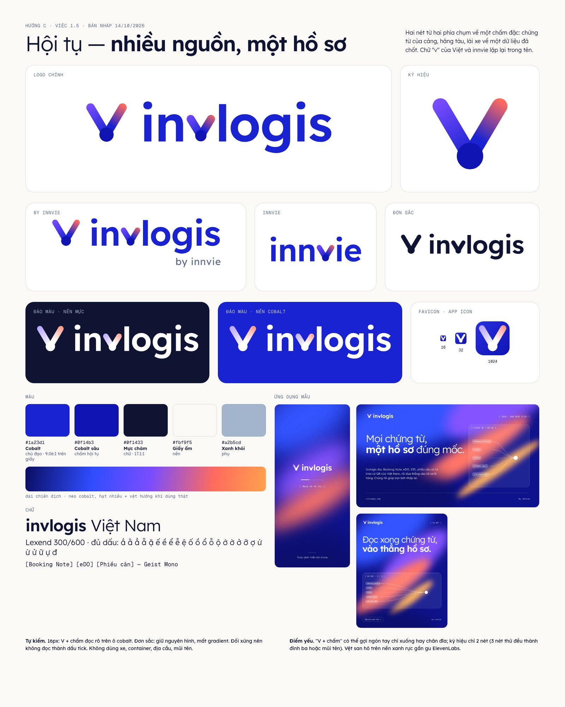
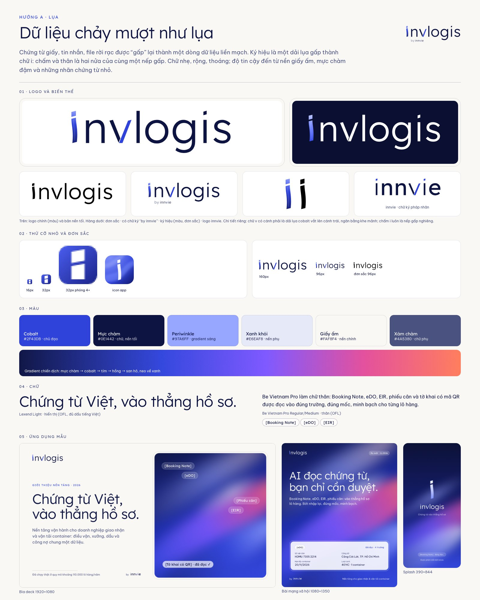
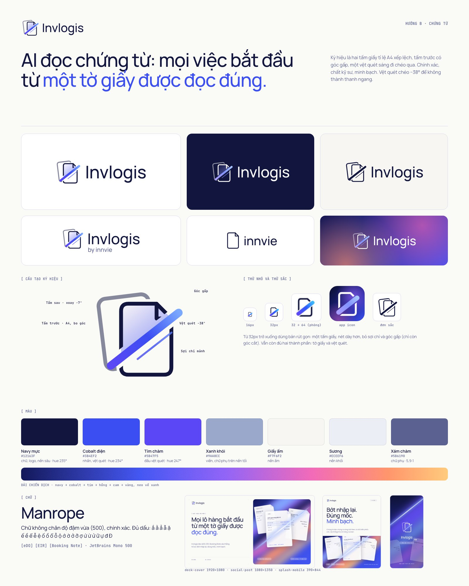

<title>Invlogis Mốc 1</title>
<link rel="stylesheet" href="https://fonts.googleapis.com/css2?family=Be+Vietnam+Pro:wght@400;500;600&family=JetBrains+Mono:wght@500&display=swap">
<style>
/* Bố cục: một cột đọc, mỗi hướng một khối ảnh + nhận xét; khuyến nghị đặt trên cùng */
:root{
  --bg:#f6f5f1; --surface:#ffffff; --ink:#14173a; --muted:#565b78; --line:#dcdbe6;
  --accent:#2a36d6; --accent-soft:#e7e9fb; --warn:#9a3b12; --warn-soft:#fbeee6; --ok:#1f6b45;
  --f-body:"Be Vietnam Pro",system-ui,-apple-system,"Segoe UI",sans-serif;
  --f-mono:"JetBrains Mono",ui-monospace,Menlo,monospace;
}
@media (prefers-color-scheme: dark){:root:not([data-theme="light"]){
  --bg:#10122a; --surface:#181b38; --ink:#eceef9; --muted:#a6abc8; --line:#2c3058;
  --accent:#8f9bff; --accent-soft:#232a5c; --warn:#ffb08a; --warn-soft:#3a2418; --ok:#7fd3a6; color-scheme:dark}}
:root[data-theme="dark"]{
  --bg:#10122a; --surface:#181b38; --ink:#eceef9; --muted:#a6abc8; --line:#2c3058;
  --accent:#8f9bff; --accent-soft:#232a5c; --warn:#ffb08a; --warn-soft:#3a2418; --ok:#7fd3a6; color-scheme:dark}
body{background:var(--bg);color:var(--ink);font:16px/1.6 var(--f-body);padding-inline:16px;padding-block:32px 64px}
main{max-width:920px;margin:0 auto;display:grid;gap:48px}
h1,h2,h3{text-wrap:balance;line-height:1.25;margin:0}
h1{font-size:clamp(28px,5vw,40px);font-weight:600}
h2{font-size:24px;font-weight:600}
h3{font-size:18px;font-weight:600}
p{margin:0;max-width:65ch}
.eyebrow{font:500 12px/1 var(--f-mono);letter-spacing:.08em;text-transform:uppercase;color:var(--accent)}
.stack{display:grid;gap:12px}
.lead{color:var(--muted);font-size:17px}
.reco{background:var(--accent-soft);border-radius:14px;padding:24px;display:grid;gap:12px}
.reco ul,.dir ul{margin:0;padding-left:20px;display:grid;gap:6px}
.table-wrap{overflow-x:auto;border:1px solid var(--line);border-radius:12px;background:var(--surface)}
table{border-collapse:collapse;width:100%;min-width:520px;font-size:14px}
th,td{padding:10px 14px;border-bottom:1px solid var(--line);text-align:left;vertical-align:top}
th{font:500 12px/1.4 var(--f-mono);letter-spacing:.04em;color:var(--muted);text-transform:uppercase}
td.n{font-variant-numeric:tabular-nums;text-align:center}
tr:last-child td{border-bottom:0;font-weight:600}
.best{color:var(--accent);font-weight:600}
.dir{display:grid;gap:16px;padding-top:24px;border-top:1px solid var(--line)}
.dir img{width:100%;border-radius:12px;border:1px solid var(--line);display:block;background:var(--surface)}
.cols{display:grid;grid-template-columns:repeat(auto-fit,minmax(260px,1fr));gap:20px}
.cols>div{min-width:0;display:grid;gap:8px;align-content:start}
.tag{display:inline-block;font:500 12px/1 var(--f-mono);padding:6px 10px;border-radius:999px;border:1px solid var(--line);color:var(--muted)}
.tag.score{border-color:var(--accent);color:var(--accent)}
.risk li::marker{color:var(--warn)}
.slogans{display:grid;gap:10px}
.slogan{background:var(--surface);border:1px solid var(--line);border-radius:12px;padding:14px 18px;display:grid;gap:2px}
.slogan b{font-size:18px}
.slogan span{color:var(--muted);font-size:14px}
.slogan.pick{border-color:var(--accent)}
.q{background:var(--surface);border:1px solid var(--line);border-radius:14px;padding:24px;display:grid;gap:14px}
.q ol{margin:0;padding-left:22px;display:grid;gap:10px}
.small{font-size:14px;color:var(--muted)}
a{color:var(--accent)}
</style>

<main>
  <header class="stack">
    <div class="eyebrow">Invlogis × innvie · Mốc 1 · 14/10/2026</div>
    <h1>Chọn hướng nhận diện và khẩu hiệu</h1>
    <p class="lead">Ba hướng logo dựng từ brief bạn đã duyệt, chấm độc lập bởi reviewer trên 9 tiêu chí. Xem xong, trả lời 4 câu ở cuối trang trong khung chat.</p>
  </header>

  <section class="reco">
    <div class="eyebrow">Khuyến nghị</div>
    <h2>Lấy C · Hội tụ làm nền, ghép thêm điểm mạnh của A và B</h2>
    <ul>
      <li>Giữ ký hiệu V + chấm của C: nhớ được sau một lần nhìn, rõ nhất ở cỡ 16px, và chữ "v" lặp lại trong cả invlogis lẫn innvie nên hai logo thành một hệ.</li>
      <li>Lấy từ A: chữ nhẹ hơn (Lexend 400–500 thay vì 600) và màu cobalt ngả tím dịu hơn trên nền giấy ấm, để đúng gu chữ mảnh, thoáng và tính cách điềm tĩnh.</li>
      <li>Lấy từ B: thẻ nhãn chứng từ [eDO] [EIR] [Booking Note] làm hình minh hoạ chiến dịch, không đưa vào logo.</li>
      <li>Sửa ở Đợt 2: bỏ chữ trắng trên vệt san hô, cam (tương phản dưới 3:1); bớt vệt san hô trên nền xanh để không gần ElevenLabs; chỉnh tỉ lệ chấm để V không đọc thành ngón tay hay chân đĩa.</li>
    </ul>
  </section>

  <section class="stack">
    <h2>Bảng điểm của reviewer</h2>
    <div class="table-wrap">
      <table>
        <thead><tr><th>Tiêu chí (1–5)</th><th>A · Lụa</th><th>B · Chứng từ</th><th>C · Hội tụ</th></tr></thead>
        <tbody>
          <tr><td>Khớp brief: tính cách, gu chữ mảnh, lụa</td><td class="n best">4</td><td class="n best">4</td><td class="n">3</td></tr>
          <tr><td>Nhận ra và nhớ được</td><td class="n">2</td><td class="n">3</td><td class="n best">4</td></tr>
          <tr><td>Rõ ở 16px</td><td class="n">2</td><td class="n">2</td><td class="n best">5</td></tr>
          <tr><td>Đứng được khi đơn sắc</td><td class="n">3</td><td class="n best">4</td><td class="n best">4</td></tr>
          <tr><td>Khác đối thủ, không na ná ElevenLabs</td><td class="n">3</td><td class="n">3</td><td class="n">3</td></tr>
          <tr><td>Tránh điều cấm</td><td class="n best">3</td><td class="n">2</td><td class="n best">3</td></tr>
          <tr><td>Tay nghề</td><td class="n">3</td><td class="n">3</td><td class="n best">4</td></tr>
          <tr><td>Logo innvie đi kèm</td><td class="n">4</td><td class="n">2</td><td class="n best">5</td></tr>
          <tr><td>Tương phản, dấu tiếng Việt</td><td class="n best">4</td><td class="n best">4</td><td class="n">3</td></tr>
          <tr><td>Tổng / 45</td><td class="n">28</td><td class="n">27</td><td class="n best">34</td></tr>
        </tbody>
      </table>
    </div>
  </section>

  <section class="dir">
    <div class="stack">
      <div class="eyebrow">Hướng C</div>
      <h2>Hội tụ: nhiều nguồn, một hồ sơ</h2>
      <p>Hai nét gradient chụm về một chấm cobalt đặc: chứng từ của cảng, hãng tàu, lái xe về một dữ liệu đã chốt. Chữ "v" của Việt và innvie lặp lại trong tên.</p>
      <div><span class="tag score">34 / 45</span> <span class="tag">Lexend 300/600 · cobalt #1A23D1</span></div>
    </div>
    
    <div class="cols">
      <div><h3>Mạnh</h3><ul><li>Hình dễ nhớ nhất trong ba hướng.</li><li>Favicon 16px rõ nhất.</li><li>Hệ innvie thuyết phục nhất.</li></ul></div>
      <div class="risk"><h3>Cần sửa</h3><ul><li>Chữ 600 hơi đậm so với gu chữ mảnh.</li><li>Chữ trắng trên vệt san hô trượt tương phản.</li><li>Vệt san hô trên nền xanh gần ElevenLabs.</li><li>V + chấm có thể đọc thành ngón tay.</li></ul></div>
    </div>
  </section>

  <section class="dir">
    <div class="stack">
      <div class="eyebrow">Hướng A</div>
      <h2>Lụa: dữ liệu chảy mượt như lụa</h2>
      <p>Dải lụa cobalt gấp thành chữ "i" mở đầu chữ invlogis. Chữ nhẹ, rộng, thoáng; gần gu ElevenLabs bạn gửi nhất.</p>
      <div><span class="tag score">28 / 45</span> <span class="tag">Lexend Light + Be Vietnam Pro · cobalt #2F43DB</span></div>
    </div>
    
    <div class="cols">
      <div><h3>Mạnh</h3><ul><li>Đúng gu chữ mảnh, giấy ấm, nhiều khoảng trắng.</li><li>Ứng dụng mẫu đẹp, sang.</li><li>Tương phản chữ chính đạt AA.</li></ul></div>
      <div class="risk"><h3>Cần sửa</h3><ul><li>Favicon thành khối vuông, giống ký hiệu pixel cũ đã bỏ.</li><li>Ký hiệu hai chữ i cạnh nhau đọc thành hai vạch dọc.</li><li>Khó nhớ: nhìn như chữ thường.</li></ul></div>
    </div>
  </section>

  <section class="dir">
    <div class="stack">
      <div class="eyebrow">Hướng B</div>
      <h2>Chứng từ: mọi việc bắt đầu từ một tờ giấy được đọc đúng</h2>
      <p>Hai tờ giấy A4 xếp lệch, một vệt quét sáng đi qua. Kể đúng câu chuyện AI đọc chứng từ nhất.</p>
      <div><span class="tag score">27 / 45</span> <span class="tag">Manrope 500 · navy #12163F, cobalt #3B4EF2</span></div>
    </div>
    
    <div class="cols">
      <div><h3>Mạnh</h3><ul><li>Câu chuyện rõ nhất.</li><li>Thẻ nhãn chứng từ dùng tốt cho chiến dịch.</li><li>Đơn sắc đứng vững.</li></ul></div>
      <div class="risk"><h3>Cần sửa</h3><ul><li>Vệt chéo trên tờ giấy đọc như dấu cấm hoặc bút sửa.</li><li>Giống icon tài liệu phổ thông.</li><li>Logo innvie chỉ là tờ giấy trống.</li><li>Chữ I hoa và l gần giống nhau.</li></ul></div>
    </div>
  </section>

  <section class="stack">
    <h2>Khẩu hiệu</h2>
    <p class="small">Agent chiến lược đề xuất, reviewer đã sửa các câu hứa quá tay. Ba câu đầu là đề xuất.</p>
    <div class="slogans">
      <div class="slogan pick"><b>Chứng từ vào. Hồ sơ sẵn.</b><span>Documents in. Records ready. · ngắn nhất, nói kết quả trước, minh hoạ ngay được</span></div>
      <div class="slogan pick"><b>Đọc đúng từ tờ đầu tiên.</b><span>Read it right, from the first page. · riêng của Invlogis, đối thủ không nói được</span></div>
      <div class="slogan pick"><b>Nhập một lần. Đi suốt lô hàng.</b><span>Enter once. Follow the shipment. · nói trụ cột một dữ liệu</span></div>
      <div class="slogan"><b>Hiểu cảng Việt qua từng chứng từ.</b><span>We know Vietnam's ports, document by document. · hợp làm dòng mô tả dưới logo</span></div>
      <div class="slogan"><b>Khai mở cách vận hành mới.</b><span>Open a new way to operate. · gắn nghĩa "khánh thành" của innvie, chỉ cho chiến dịch ra mắt</span></div>
    </div>
    <p class="small">Câu định vị: cho lãnh đạo doanh nghiệp vận tải container Việt Nam đang chạy bằng Excel, Zalo và giấy tờ, Invlogis là nền tảng vận hành dùng chung một dữ liệu cho điều vận, xưởng, dầu, công nợ; khác vì AI đọc thẳng Booking Note, eDO, EIR, phiếu cân, tờ khai có QR vào hồ sơ.</p>
  </section>

  <section class="q">
    <div class="eyebrow">Trả lời trong khung chat</div>
    <h2>Bốn câu để chốt Mốc 1</h2>
    <ol>
      <li><b>Hướng:</b> theo khuyến nghị (C làm nền, ghép A và B), giữ nguyên một hướng, hay ghép kiểu khác?</li>
      <li><b>Khẩu hiệu chính:</b> chọn một câu ở trên, hoặc viết câu của bạn.</li>
      <li><b>Câu chuyện tên innvie:</b> từ điển Na Uy cho thấy nghĩa chính của innvie là "khánh thành, đưa vào sử dụng"; "cống hiến" là nghĩa của gốc vie. Dùng nghĩa khánh thành làm chính được không?</li>
      <li><b>Cách viết tên:</b> logo dùng chữ thường "invlogis", "innvie"; trong câu văn viết "Invlogis" hoa chữ I, "innvie" luôn thường. Đồng ý không?</li>
    </ol>
  </section>
</main>
